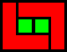

Problem of the Month (October 2007)
One of our graduating seniors in mathematics, Adam Holers, did his senior research project on the following game called Blob. There are two players: the Blob-Maker and the Blob-Stopper. Each player chooses a polyomino, which does not change throughout the game. The players take turns placing non-overlapping copies of their polyomino on an infinite square grid. The Blob-Maker, who goes first, is trying to create the largest possible edge-connected union of his polyominoes, or Blob. The Blob must contain the first polyomino placed by the Blob-Maker. The Blob-Stopper is trying to limit the size of the Blob. Given the polyominoes, what is the size of the Blob with optimal play by both players?
ANSWERS
Corey Plover found an error in one my analyses, increasing the Blob size.
Claudio Baiocchi pointed out that the Blob size is definitely smaller in some cases if we force all moves by the Blob-Maker to be connected:

Here are the confirmed and conjectured values of the Blob size when the Blob-Maker uses the green polyomino and the Blob-Stopper uses the red polyomino. There is a lot of work to be done!
|  |  |  | | |  |  | |
|
| 16? (AH) | | ≥9, ≤33 (CP) | 4 | | 3 | | 4 | 4
|
| | | | | |  | | | | | |
|
| | 4 | ≥5 (CP) | 3 | 3 | 3 | 2 | 4 | ≥5 (CP) | 14? (GT) | 3 | 3
|
(AH) = Adam Holers
(CP) = Corey Plover
(GT) = Gavin Theobald
If you can extend any of these results, please
e-mail me.
Click here to go back to Math Magic. Last updated 10/28/07.